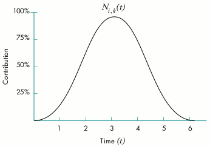
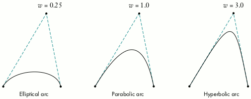

QuickDraw 3D supports a mathematical model for arbitrary curves and surfaces
known as NURB (nonuniform rational B-splines). NURB curves are flexible and
powerful, but using them effectively requires some understanding of the underlying
mathematical theory. This article presents an intuitive introduction to the
mathematical concepts of the NURB model and how to use them in your QuickDraw 3D
programs.
One of the more powerful features of QuickDraw 3D is its ability to work with curves
and surfaces of arbitrary shape. The mathematical model it uses to represent them is
known as NURB, for nonuniform rational B-splines. The NURB model is flexible and
powerful, but for those unfamiliar with the mathematics, it can appear dauntingly
complex. The existing books and articles on the subject tend to be rigorous, lengthy,
and theoretical, and often seem to require that you already understand the subject in
order to follow the explanations.
The mathematics really aren't so frightening, though, once you understand them. The
aim of this article is to give you an intuitive understanding of how NURBcurves work.
Later in the article, we'll look at some code to show you how you can start using NURB
curves in your own programs -- but you really do need to understand the theory
before you can start putting it to practical use. So please be patient while we slog
through the mathematical concepts: I promise we'll get around to some actual
programming before we're through. Note also that this article is only about NURB
curves; perhaps a future article will cover NURB surfaces and how to use curves and
surfaces together.
Some writers also use the s from "spline," resulting in the acronym
NURBS -- but most avoid this usage because phrases like "a NURBS curve"
sound awkward, and "a NURBS surface" sounds perfectly hideous.*
Like any graphics package, QuickDraw 3D offers low-level geometric primitives for
objects such as lines, points, and triangles. Because the representations of these
objects are mathematically exact -- lines being defined by their two endpoints,
triangles by their three vertices, and so forth -- they're resolution independent and
unaffected by changes in position, scale, or orientation.
The low-level primitives can also be used to define arbitrarily shaped objects, such
as a football or an automobile hood, but at the cost of these desirable mathematical
properties; for example, a circle that's approximated by a sequence of line segments
will change its shape when rotated. One of the advantages of NURB curves is that they
offer a way to represent arbitrary shapes while maintaining mathematical exactness
and resolution independence. Among their useful properties are the following:
In addition to drawing NURB curves directly as graphical items, you can use them in
various other ways that exploit their useful mathematical properties, such as for
guiding animation paths or for interpolating or approximating data. You can also use
them as a tool to design and control the shapes of three-dimensional surfaces, for
purposes such as
Before we go into the specifics of NURB curves, let's review some of the basics of
curve representation in general.
Although QuickDraw 3D supports three-dimensional NURB curves, we'll limit all of
our examples and discussions here to two dimensions. But everything we say about
two-dimensional curves applies in three dimensions as well -- the two-dimensional
versions are just easier to visualize and easier to draw.
A BIT OF HISTORY
Back in the days before computers, architects, engineers, and artists would draw their
designs for buildings, roads, machine parts, and the like by using pencil, paper, and
various drafting tools. These tools included rulers and T-squares for drawing straight
lines, compasses for drawing circles and circular arcs, and triangles and protractors
for making precise angles.
Of course, a lot of interesting-shaped objects couldn't be drawn with just these
simple tools, because they had curved parts that weren't just circles or ellipses.
Often, a curve was needed that went smoothly through a number of predetermined
points. This problem was particularly acute in shipbuilding: although a skilled artist
or draftsman could reliably hand-draw such curves on a drafting table, shipbuilders
often needed to make life-size (or nearly life-size) drawings, where the sheer size of
the required curves made hand drawing impossible. Because of their great size, such
drawings were often done in the loft area of a large building, by a specialist known as a
loftsman. To aid in the task, the loftsman would employ long, thin, flexible strips of
wood, plastic, or metal, called splines. The splines were held in place with lead
weights, called ducks because of their resemblance to the feathered creature of the
same name (see Figure 1).
Figure 1. A draftsman's spline
The resulting curves were smooth, and varied in curvature depending on the position
of the ducks. As computers were introduced into the design process, the physical
properties of such splines were investigated so that they could be modeled
mathematically on the computer.
DIRECT FUNCTIONS
Our goal is to represent curves in a mathematically precise fashion. One simple way is
to think of the curve as the graph of a function:
Take a simple one like the trigonometric sine function:
By plotting the value of the function for various values of x and connecting them
smoothly, we obtain the curve shown in Figure 2.
Figure 2. Plot of sine function values
In the case of curves drawn by the spline method, it turned out that with some
reasonable simplifying assumptions, they could be mathematically represented by a
series of cubic (third-degree) polynomials, each having the form
At this point, the standard references typically go into a long, involved development of
this idea into what are known as cubic spline curves, eventually leading to the theory
of NURB curves. Such explanations are interesting, but not terribly intuitive. If
you're interested in pursuing this subject further, you'll find a good discussion in
Mathematical Elements for Computer Graphics. (Complete information on this and
other literature references in this article can be found in the bibliography at the end.)
PARAMETRIC FUNCTIONS
Using direct functions to represent a curve fits our criterion of being mathematically
exact, but it has one serious drawback: since we can have only one value of y for each
value of x, our curves can't loop back on themselves. Thus, although we can make some
nice smooth curves this way, there are a lot of interesting curves we can't make --
not even something as simple as a circle.
An alternative method, and the one we'll be using, is to define the curve with a
parametric function. In general, such functions have the form
where X(t) and Y(t) are functions of the parameter t (hence parametric). Given a
value of t, the function X(t) gives the corresponding value of x, and Y(t) the value of y.
One way to understand such functions is to imagine a particle traveling across a sheet
of paper, tracing out a curve. If you think of the parameter t as representing time, the
parametric function Q(t) gives the {x, y} coordinates of the particle at time t. For
example, defining the functions X(t) and Y(t) as
produces a circle, as you can verify by plugging in some values of t between 0 and
2π and plotting the results.
SMOOTHNESS
One very important motivation for using NURB curves is the ability to control
smoothness. The NURB model allows you to define curves with no kinks or sudden
changes of direction (such as an airplane-wing cross section) or with precise control
over where kinks and bends occur (sharp corners of machined objects, for instance).
We all know (or think we do) what a nice, smooth curve looks like: it has no kinks or
corners. If we were to sit on that moving particle as it traces out a parametric curve,
we would experience a nice smooth ride with no stopping, restarting, or sudden
changes in speed or direction: we wouldn't be heading north, say, and then turn
completely east in an instant. This intuitive notion can be expressed in precise
mathematical terms: Imagine an arrow that always points in the direction in which our
hypothetical particle is traveling as it moves along the curve. Mathematically, the
direction arrow corresponds to the tangent of the curve, which can be computed as the
derivative of the curve's defining function with respect to the time parameter t:
In Figure 3, for example, the point on the curve corresponding to time is labeled as
, and the direction vector (tangent) at that point as . If the tangent doesn't
jump suddenly from one direction to another, the curve's function is said to have
first-derivative continuity, denoted by : this corresponds to our intuitive notion of
smoothness.
Figure 3. Tangent (derivative) of a curve
Now look at the point marked , where there's a visible kink in the curve. The
direction vector just a tiny bit to the left of that point, , is wildly
different from the one just a tiny bit to the right, . In fact, the
direction vector jumps instantaneously from one direction to another at point .
Mathematically, this is called adiscontinuity.
Many of you will recall from your college calculus that the derivative of a function is
also a function, whose degree is one less than that of the original function. For
example, the derivative of a fourth-degree function is a third-degree function. The
derivative of the derivative, called the second derivative, will then be of degree 2. This
second derivative may or may not be continuous: if it is, we say that the original
function has second-derivative continuity, or . As the first derivative describes the
direction of the curve, the second derivative describes how fast that direction is
changing. The second derivative thus characterizes the curve's degree of curvature,
and so a -continuous curve is said to have curvature continuity. We'll come back to
these important concepts after we've introduced NURB curves themselves.
Now that we know how parametric functions work, let's see how we can use them to
build up a definition for NURB curves. If we call our function Q, the left side of our
equation will look like this:
where t is a parameter representing time. By evaluating this function at a number of
values of t, we'll get a series of {x, y} pairs that we can use to plot our curve, as
shown in Figure 4. Now all we have to do is define the right-hand side.
Figure 4. Plotting a parametric function
CONTROL POINTS
One of the key characteristics of NURB curves is that their shape is determined by
(among other things) the positions of a set of points called control points, like the ones
labeled in Figure 5. As in the figure, the control points are often joined with
connecting lines to make them easier to see and to clarify their relationship to the
curve. These connecting lines form what's known as acontrol polygon. (It would
actually make more sense to call it a "control polyline," but the other is the
conventional term.)
Figure 5. Defining a curve with control points
The second curve in Figure 5 is the same curve, but with one of the control points
() moved a bit. Notice that the curve's shape isn't changed throughout its entire
length, but only in a small neighborhood near the changed control point. This is a very
desirable property, since it allows us to make localized changes by moving individual
control points, without affecting the overall shape of the curve. Each control point
influences the part of the curve nearest to it but has little or no effect on parts of the
curve that are farther away.
One way to think about this is to consider how much influence each of the control
points has over the path of our moving particle at each instant of time. At any time t,
the particle's position will be a weighted average of all the control points, but with the
points closer to the particle carrying more weight than those farther away. We can
express this intuitive notion mathematically this way:
In other words, to find the position of the moving particle at a particular time, add up
the positions of all the control points () but vary the strength of each point's
contribution over time (). We'll explain the meaning of the subscript k
shortly.
The bounding volume returned by QuickDraw 3D for all other geometric
primitives is a volume that encloses the primitive itself. For NURB curves,
however, the returned bounding volume encloses the curve's control points,
rather than the curve itself. This is done for historical reasons, and is the
normal practice in 3D graphics packages.*
BASIS FUNCTIONS
The function , which determines how strongly control point influences the
curve at time t, is called the basis function for that control point. In fact, the B in
"B-splines" stands for "basis." The value of this function is a real number such as
0.5, so that a particular point can be defined as, say, 25% of one control point's
position, plus 50% of another's, plus 25% of yet a third's. To complete our NURB
equation, we have to specify the basis function for each control point.
So how do we go about defining the basis functions? Remember that we want each
region of the NURB curve to be a local average of some small number of control points
close to that region. When the moving particle is far away from a given control point,
that control point has little influence on it; as the particle gets closer, the control
point affects it more and more. Then the effect diminishes again as the particle recedes
past the control point.
Up to now, we've been using the words "near" and "far" in a rather vague way, but the
time has come to pin them down more rigorously. Because we've defined our curve
parametrically with respect to time, we can regard what we've been calling a "part" or
"region" of the curve as a portion of the time interval the curve covers. For example,
if our curve goes from time t = 0.0 to t = 10.0, we can specify a particular region as
extending from, say, t = 3.3 to t = 7.5. So we can say, for instance, that a control point
Bi is centered at time t = 5.0 and has an effect in the range from t = 3.3 to t = 7.5.
Figure 6 shows a typical example of what a basis function might look like: it has its
maximum effect at some definite point in time and tapers off smoothly as it gets
farther away from that point. If you were awake during your college statistics course,
you might recognize this as the familiar "bell curve" that we all learned to know and
loathe. The curve in the figure shows that control point has its greatest
effect (about 95%) at time t = 3.0 and tapers off to about 50% at t = 1.7 and t = 4.3.

Figure 6. Basis function for a control point
Since each control point has its own basis function, a NURB curve with, say, five
control points will have five such functions, each covering some region of the curve
(that is, some interval of time). At time t = 2.3 in Figure 7, for example, control
point has a weight of about 0.2, about 0.7, and about 0.05. As t goes from
0.0 to 7.0, each control point's effect on the shape of the curve is initially 0,
increases gradually to a maximum, and then gradually tapers off again to 0 as we reach
the end of its effective range.
Figure 7. Uniform basis functions for a set of control points
KNOTS
Notice that all of the basis functions in Figure 7 have exactly the same shape and cover
equal intervals of time. In general, we'd like to be able to vary the width of the
intervals (so that some control points affect a larger region of the curve and others a
smaller region) and the maximum height of the curves (so that some control points
affect the shape of the curve more strongly than others). That's where the NU in NURB
comes from: it stands for nonuniform.
The solution is to define a series of points that partition the time into intervals,
which we can then use in the basis functions to achieve the desired effects. By varying
the relative lengths of the intervals, we can vary the amount of time each control point
affects the particle. The points demarcating the intervals are known as knots, and the
ordered list of them is a knot vector (Figure 8). The knot vector for the basis
functions shown in Figure 7 is {0.0, 1.0, 2.0, 3.0, 4.0, 5.0, 6.0, 7.0}. This is an
example of a uniform knot vector, which is why all the functions in the figure cover
equal intervals of time. Figure 9 shows an example of a curve created with such a knot
vector.
Figure 8. A knot vector
Figure 9. NURB curve with uniform knot vector
If we change the knot vector to {0.0, 1.0, 2.0, 3.75, 4.0, 4.25, 6.0, 7.0}, we get a set
of nonuniform basis functions like the ones shown in Figure 10, and a curve that looks
like Figure 11 (using the same set of control points as in Figure 9). Notice that the
basis functions and , associated with control points and ,
respectively, are taller and narrower than the others. If you compare Figures 9 and
11, you'll see that the curve in Figure 11 is pulled more strongly toward control
points and than the one in Figure 9. This is because the basis functions for these
control points have a greater maximum value. Also, the curve rapidly approaches
these control points and rapidly moves away: compare how tightly curved it is near
these points, relative to the curve in Figure 9. This is a result of the narrower basis
functions for these two control points: intuitively, our moving particle has to traverse
more space in relatively less time. Looking at the knot vector, you can see that the knot
intervals for these two control points are narrower than the others -- {3.75, 4.0}
and {4.0, 4.25} -- meaning that their effects on the curve are concentrated in shorter
time intervals.
Figure 10. Nonuniform basis functions for a set of control points
Figure 11. NURB curve with nonuniform knot vector
DEFINING THE BASIS FUNCTIONS
We're now ready to complete our definition of a NURB curve by giving an exact
specification of the basis functions. In some respects, we're free to use any sort of
functions we'd like, but by choosing them carefully, we can get certain desirable
effects. The definitions we'll be using are as follows:
where is the conventional notation for the ith knot in the knot vector.
This definition has a lot of stuff in it, and lots of subscripts -- we're getting into the
real theoretical aspects of NURB curves here. Notice that the functions for higher
values of the subscript k (called the order of the basis function) are built up
recursively from those of lower orders. If k is the highest order of basis function we
define, the resulting NURB curve is said to be of order k or of degree k-1. At the very
bottom of the hierarchy, the functions of order 1 are simply 1 if t is between the ith
and (i+1)st knots, and 0 otherwise.
The specifics of this particular set of basis functions, and how they came to be this
way, are beyond the scope of this article; if you're interested in learning more, you'll
find all the detail you could possibly want (and then some) in An Introduction to
Splines for Use in Computer Graphics and Geometric Modeling. However, we can at
least mention a number of important characteristics that this choice of basis functions
exhibits:
This last characteristic is of more than theoretical interest: a cubic (degree-3 or
order-4) NURB curve with a knot vector of, say, {0.0, 1.0, 2.0, 3.0, 4.0, 5.0, 6.0,
7.0} only goes from t = 3.0 tot = 4.0! The rule is that the curve begins at the kth knot
from the beginning of the knot vector and ends at the kth knot from the end.
KNOTS AND KINKS
I should point out here that nonuniform knot vectors aren't really very useful for
controlling the shape of a curve. (In fact, moving control points around directly isn't
that useful, either -- but we'll get to that later.) Instead, nonuniform knot vectors
have two important uses:
We can accomplish both of these goals by using a rather extreme case of
nonuniformity: giving several consecutive knots the same value of t! For example, a
knot vector like {0.0, 0.0, 0.0, 3.0, 4.0, 5.0, 6.0, 7.0} produces a set of basis
functions like those in Figure 12 and a curve (using the same control points as before)
that looks like Figure 13. Looking at Figure 12, you can see that at t = 0, the basis
functions associated with all but the first control point have a 0 value -- so basis
function (the one for control point ) has total control over the curve. Thus
the curve at t = 0 coincides with the first control point.
Figure 12. Basis functions for a curve with multiple identical knots at the beginning
Figure 13. NURB curve with multiple identical knots at the beginning
If we bunch up some knots in the middle of the knot vector {0.0, 1.0, 2.0, 3.0, 3.0,
5.0, 6.0, 7.0}, we get the basis functions shown in Figure 14 and the curve in Figure
15. At t = 3.0, all the basis functions except have a 0 value -- so control
point is the only one to affect the curve at that instant, and thus the curve coincides
with that control point.
Figure 14. Basis functions for a curve with multiple identical knots in the middle
Figure 15. NURB curve with multiple identical knots in the middle
In mathematical terms, continuity (smoothness) is an issue only at the joints defined
by the curve's knots, where two segments of the curve meet; between the joints, the
curve is perfectly smooth and continuous. A typical curve, in which each joint
corresponds to a single knot, has continuity where n is the degree of the curve.
So a cubic (degree-3 or order-4) curve has second-derivative continuity () at
each joint if all the knots are distinct. If two knots coincide, the continuity at that joint
goes down by one degree; if three coincide, the continuity goes down another degree;
and so on.
This means you can put a kink in the curve at a particular point by adding knots to the
knot vector at that point. Later, we'll look at some code that shows how to do this. We'll
also see how you can use this same technique of knot insertion to convert a curve from
NURB to Bézier representation.
RATIONAL CURVES
Now that we've learned all about control points and knots and basis functions, we
understand NUB (nonuniform B-spline) curves. But what about the rest of the
acronym? We're still missing the R in NURB. It's time to talk about rational curves.
If you've sneaked a peek at QuickDraw 3D's NURB definitions, you may have wondered
why it uses a four-dimensional representation for three-dimensional control points:
{x, y, z, w} instead of just {x, y, z}. The reason for the extra coordinate is that it
allows us to exactly represent conic curves (circles, ellipses, parabolas, and
hyperbolas), as well as giving us more control over the shape of other curves. The
fourth coordinate, w, is customarily referred to as the weight of the control point.
Ordinarily, each control point carries a weight of 1.0, meaning that they all have equal
influence on the shape of the curve. Increasing the weight of an individual control point
gives it more influence and has the effect of "pulling" the curve toward that point (see
Figure 16).
Figure 16. Increasing the weight of a control point
Curves that are defined in this way, with a weight w for each control point, are called
rational curves. Mathematically, such curves are defined in four-dimensional space
(since the control points have four components) and are projected down into
three-dimensional space. Visualizing objects in four dimensions is a bit difficult (let
alone drawing them in a diagram), but we can understand the basic idea by considering
rational two-dimensional curves: that is, curves defined in three-dimensional space
and projected onto a plane, as shown in Figure 17.
Figure 17. Projecting a three-dimensional curve into two dimensions
This is essentially the same process as projecting a three-dimensional model onto a
two-dimensional screen with a perspective camera. The basic method for such
perspective projection is to divide by the homogeneous component of the vertex (that
is, w); we use an analogous approach to project our four-dimensional rational curve
into three-dimensional space. Mathematically, then, we must incorporate this division
into our earlier definition for a B-spline curve:
The are the projections of the four-dimensional control points and the are their
weights.
There are two different conventions for representing the control points in terms of
their four-dimensional coordinates {x, y, z, w}:
QuickDraw 3D uses homogeneous representation, as do most technical papers and other
graphics libraries.
CONIC SECTIONS
I said earlier that we could use the rational aspect of NURB curves to create conic
sections (such as circles and ellipses). Conic sections are so called because they're the
curves we get by intersecting a cone with a plane; the angle at which the plane
intersects the cone determines whether the resulting curve is a circle, an ellipse, a
parabola, or a hyperbola. Strictly speaking, hyperbolas and parabolas are of infinite
extent -- but infinite curves are generally not useful in graphics applications
(besides being very hard to compute a bounding box for). So we'll restrict our
discussion to conic arcs.
Since conic curves are quadratic, we can represent them by quadratic (degree-2 or
order-3) NURB curves. The practical question, of course, is which NURB curve.
Although the proof is beyond the scope of this article, the following method (illustrated
in Figure 18) can be used to generate conic arcs:

Figure 18. Constructing conic arcs
Probably the most common form of conic arc, particularly in modeling and design
applications, is a circular arc. Since a circle is simply a special case of an ellipse, the
method for constructing a circular arc is a special case of the general method for
elliptical arcs:
Figure 19 illustrates this construction. (In this case, the control triangle is
equilateral, so the angle θ is 60 and the resulting arc is 120, or
one-third of a circle.)
Figure 19. Constructing a circular arc
Note that the foregoing method can only produce circular arcs less than 180; for
larger arcs, we have to piece together several NURB curves. So to draw a complete
circle we could combine three 120 arcs, or four 90 arcs. However, it's
possible to represent these three or four separate arcs as a single curve and to make a
circle with only one NURB curve. Figures 20 and 21 show how to do it with three and
four arcs, respectively.
Figure 20. Constructing a circle with three arcs
Figure 21. Constructing a circle with four arcs
By now you're probably saying, "Enough theory already -- how does all this relate to
Macintosh programming?" So let's finally look at QuickDraw 3D's data structures and
routines for working with NURB curves.
DATA STRUCTURES
If you've been following the discussion so far, you can probably guess the contents of
the data structure representing a NURB curve: the order of the curve, its control
points, and its knots. There's also the usual QuickDraw 3D attribute set, so you can
draw your curves in, say, fuchsia or vermilion. Here are the definitions:
typedef struct TQ3RationalPoint4D {
float x;
float y;
float z;
float w;
} TQ3RationalPoint4D;
typedef struct TQ3NURBCurveData {
unsigned long order; // Order of the curve
unsigned long numPoints; // Number of control points
TQ3RationalPoint4D *controlPoints; // Array of control points
float *knots; // Array of knots
TQ3AttributeSet curveAttributeSet; // QuickDraw 3D attributes
} TQ3NURBCurveData;
Most of this is pretty straightforward, but here are a few things to keep in mind:
RENDERING A NURB CURVE
If you're familiar with QuickDraw 3D, you know that there are two ways to render a
graphical entity (called a geometry in QuickDraw 3D terminology):retained mode and
immediate mode. In retained mode, you first create an object representing the figure
you want to draw, then use this retained object to do your drawing. (See the article
"The Basics of QuickDraw 3D Geometries" indevelop Issue 23 for more on this.)
Listing 1 shows how this works for a NURB curve. First we initialize a
TQ3NURBCurveData structure describing the curve to be drawn; we use this structure
to create a retained object with the QuickDraw 3D function Q3NURBCurve_New, and
then we pass the resulting object to Q3Geometry_Submit to render the curve. Finally,
we dispose of the retained object we created.
Listing 1. Rendering a NURB curve in retained mode
TQ3GeometryObject curveObject;
TQ3NURBCurveData curveData;
static TQ3RationalPoint4D controlPoints[4] = {
{ 0, 0, 0, 1 },
{ 1, 1, 0, 1 },
{ 2, 0, 0, 1 },
{ 3, 1, 0, 1 }
};
static float knots[8] = {
0, 0, 0, 0, 1, 1, 1, 1
};
// Initialize the data structure.
curveData.order = 4;
curveData.numPoints = 4;
curveData.controlPoints = controlPoints;
curveData.knots = knots;
curveData.curveAttributeSet = NULL;
// Make a retained object.
curveObject = Q3NURBCurve_New(&curveData);
// Use the retained object to render the curve.
Q3View_StartRendering(view);
do {
Q3Geometry_Submit(curveObject, view);
} while (Q3View_EndRendering(view) == kQ3ViewStatusRetraverse);
// Dispose of the curve object.
Q3Object_Dispose(curveObject);
The equivalent drawing operation in immediate mode uses exactly the same code up to
the point where the object is created. Instead of creating the retained object, we
simply pass the TQ3NURBCurveData structure directly to the QuickDraw 3D function
Q3NURBCurve_Submit to be rendered immediately:
// Render the curve directly.
Q3View_StartRendering(view);
do {
Q3NURBCurve_Submit(&curveData, view);
} while (Q3View_EndRendering(view) == kQ3ViewStatusRetraverse);
CONTROLLING SUBDIVISION
QuickDraw 3D doesn't render NURB curves directly -- as it does, say, lines or
triangles. To draw a NURB curve, the renderer has to break it up into a sequence of
lines or polylines. The more lines it's broken up into, the smoother it looks, but of
course the longer it takes to render. Before rendering a curve, you have to tell the
renderer how finely you want it subdivided.
There are three ways of doing this, denoted by the values of an enumerated data type:
typedef enum TQ3SubdivisionMethod {
kQ3SubdivisionMethodConstant,
kQ3SubdivisionMethodWorldSpace,
kQ3SubdivisionMethodScreenSpace
} TQ3SubdivisionMethod;
The following data structure specifies the subdivision method to use and the relevant
parameter values:
typedef struct TQ3SubdivisionStyleData {
TQ3SubdivisionMethod method;
float c1;
float c2;
} TQ3SubdivisionStyleData;
NURB curves use only the c1 component; the other is for NURB surfaces. A couple of
things to note:
Expanding on our example of immediate mode rendering, the following code will render
our NURB curve with a five-segment polyline between each pair of knots:
TQ3SubdivisionStyleData subdivData;
...
subdivData.method = kQ3SubdivisionMethodConstant;
subdivData.c1 = subdivData.c2 = 5;
...
Q3View_StartRendering(view);
do {
Q3SubdivisionStyle_Submit(&subdivData, view);
Q3NURBCurve_Submit(&curveData, view);
} while (Q3View_EndRendering(view) == kQ3ViewStatusRetraverse);
EDITING NURB CURVES
If you're rendering your curve in immediate mode, you can edit the curve by simply
modifying its control points, weights, and knot vectors directly in the
TQ3NURBCurveData structure. If you're using retained mode, QuickDraw 3D provides
calls to retrieve and set individual control points and knots:
TQ3Status Q3NURBCurve_GetControlPoint(TQ3GeometryObject curve,
unsigned long pointIndex, TQ3RationalPoint4D *point4D);
TQ3Status Q3NURBCurve_SetControlPoint(TQ3GeometryObject curve,
unsigned long pointIndex, const TQ3RationalPoint4D *point4D);
TQ3Status Q3NURBCurve_GetKnot(TQ3GeometryObject curve,
unsigned long knotIndex, float *knotValue);
TQ3Status Q3NURBCurve_SetKnot(TQ3GeometryObject curve,
unsigned long knotIndex, float knotValue);
Because we're not interacting with items that are objects themselves, there are no
reference counts involved and no need to dispose of any data structures. Note, however,
that if you edit a knot, the resulting knot vector must remain nondecreasing and follow
the limitations described earlier for multiple knots.
You may have noticed that there are no calls to add, delete, or reorder control points or
knots. Instead, QuickDraw 3D provides calls for retrieving and replacing the entire
TQ3NURBCurveData structure from the retained object:
TQ3Status Q3NURBCurve_GetData(TQ3GeometryObject curve,
TQ3NURBCurveData *nurbCurveData);
TQ3Status Q3NURBCurve_SetData(TQ3GeometryObject curve,
const TQ3NURBCurveData *nurbCurveData);
If you want to change the number of control points and knots in a curve, you have to
make a local copy of the data structure you obtain from Q3NURBCurve_GetData
(making sure to allocate extra space for the new knots and control points), modify the
arrays in the local copy, and store it back into the object with Q3NURBCurve_SetData.
You must then call the following routine to dispose of the data you received from
Q3NURBCurve_GetData:
TQ3Status Q3NURBCurve_EmptyData(TQ3NURBCurveData *nurbCurveData);
However, if you're going to be modifying the NURB curve frequently, you should
probably be working in immediate mode and not using a retained object at all.
In general, the more control points we define for a NURB curve, the more control we
have over its shape. It would seem reasonable that we could add more control points
without changing the shape of the curve, and in fact this turns out to be true.
Remember, though, that there's a fundamental relationship among the knots, the
control points, and the order of the curve: the number of knots is equal to the number
of control points plus the order. For example, a cubic curve (order 4) with 9 control
points will require 13 knots. So every time we add a control point, we also have to add
an extra knot -- and make sure all the control points are in the correct locations to
keep the curve's shape the same as before.
In practice, we actually take the reverse approach: we decide where to add a new knot,
then compute the location of the corresponding new control point (as well as the new
locations of some of the existing ones). For example, if we take the curve depicted
earlier in Figure 9 and insert a new knot at t = 3.6, we get a new curve with exactly
the same shape but with a new set of control points (Figure 22).
Figure 22. Inserting a knot
This operation of knot insertion is a fundamental one in working with NURB curves.
It's directly useful in both modifying (editing) and rendering curves, and can also be
used to convert a NURB curve to Bézier representation. After a brief discussion of the
mathematical algorithm for inserting a knot, we'll look at some example C code for
implementing it.
THE ALGORITHM
We start with a NURB curve represented by
with a knot vector
. Suppose we want to add a new knot
where
The new knot vector
is simply the old knot vector with
inserted
between
and
The new curve will be defined by
with knot vector
Now we have to figure out not only where the new control point is located and where
it goes in the ordered vector of control points, but also how to adjust some of the
existing control points to keep the shape of the curve unchanged; this process yields
the new control point vector,
It turns out that the relationship between the old and
new control points is
where α is defined by
The proof of this is relatively simple, but we don't have the time or space to go into it
here. For a full discussion, see Curves and Surfaces in Computer Aided Geometric
Design.
Listing 2 shows a function to implement this basic algorithm. The function, which is
included on this issue's CD, accepts a QuickDraw 3D NURB-curve data structure as an
argument, along with the value of the new knot to insert, and returns a new data
structure representing the same curve with the new knot inserted. For brevity, the
function performs no range checking on the inserted knot, but simply assumes that it
falls within the legal range and that the resulting knot vector obeys the usual
limitations on multiple knots. Note also that the code shown here does no checking on
the results of memory allocation requests, though of course you should always perform
such checks in real life.
Listing 2. Inserting a knot
static TQ3NURBCurveData *InsertKnot
(TQ3NURBCurveData *oldCurveData, // Old curve
float tNew) // Knot to insert
{
TQ3NURBCurveData *newCurveData; // New curve after adding knot
unsigned long k; // Order of curve
unsigned long n; // Number of control points
TQ3RationalPoint4D *b; // Old control point vector
TQ3RationalPoint4D *bHat; // New control point vector
float *x; // Old knot vector
float *xHat; // New knot vector
float alpha; // Interpolation ratio
unsigned long i; // Knot to insert after
unsigned long j; // Knot index for search
TQ3Boolean foundIndex; // Insertion index found?
// Set up local variables for readability.
k = oldCurveData->order;
n = oldCurveData->numPoints;
x = oldCurveData->knots;
b = oldCurveData->controlPoints;
// Allocate space for new control points and knot vector.
bHat = malloc((n + 1) * sizeof(TQ3RationalPoint4D));
xHat = malloc((n + k + 1) * sizeof(float));
// Allocate data structure for new curve.
newCurveData = malloc(sizeof(TQ3NURBCurveData));
newCurveData->order = k;
newCurveData->numPoints = n + 1;
newCurveData->controlPoints = bHat;
newCurveData->knots = xHat;
newCurveData->curveAttributeSet =
(oldCurveData->curveAttributeSet == NULL)
? NULL
: Q3Object_Duplicate(oldCurveData->curveAttributeSet);
// Find where to insert the new knot.
for (j = 0, foundIndex = kQ3False; j < n + k; j++) {
if (tNew > x[j] && tNew <= x[j + 1]) {
i = j;
foundIndex = kQ3True;
break;
}
}
// Return if not found.
if (!foundIndex) {
return (NULL);
}
// Copy knots to new vector.
for (j = 0; j < n + k + 1; j++) {
if (j <= i) {
xHat[j] = x[j];
} else if (j == i + 1) {
xHat[j] = tNew;
} else {
xHat[j] = x[j - 1];
}
}
// Compute position of new control point and new positions of
// existing ones.
for (j = 0; j < n + 1; j++) {
if (j <= i - k + 1) {
alpha = 1;
} else if (i - k + 2 <= j && j <= i) {
if (x[j + k - 1] - x[j] == 0) {
alpha = 0;
} else {
alpha = (tNew - x[j]) / (x[j + k - 1] - x[j]);
}
} else {
alpha = 0;
}
if (alpha == 0) {
bHat[j] = b[j - 1];
} else if (alpha == 1) {
bHat[j] = b[j];
} else {
bHat[j].x = (1 - alpha) * b[j - 1].x + alpha * b[j].x;
bHat[j].y = (1 - alpha) * b[j - 1].y + alpha * b[j].y;
bHat[j].z = (1 - alpha) * b[j - 1].z + alpha * b[j].z;
bHat[j].w = (1 - alpha) * b[j - 1].w + alpha * b[j].w;
}
}
return (newCurveData);
}
EVALUATING NURB CURVES
Recall from our earlier discussion that if we have two knots at the same location, we
lose one degree of continuity; with three identical knots, we lose two degrees of
continuity; and so on. This process can be repeated until, when we reach k-1 identical
knots (where k is the order of the curve), we have no continuity at all at the given
point. In this case, the curve at that point coincides directly with a control point, as we
saw in Figure 15.
We've just seen that we can add a knot xnew and calculate the new control points. If
we take this "new" curve (really just the old one with more knots) and add in that
same knot again and again, until we have k-1 knots in the same place, we'll end up
with a control point that lies exactly at . We can use this technique to
calculate the location of a particular point on the NURB curve: simply keep inserting
knots at the point of interest until there are k-1 of them, at which time the newest
control point created will lie at the desired point on the curve.
We can also use this approach to render a curve: by adding enough knots at some
number of successive points in time t, we'll end up with a list of evaluated points on
the curve, which we can then render as a polyline. The greater the number of
evaluation points, the more segments the polyline will have, and the more closely the
resulting image will approximate the curve.
This isn't the most efficient algorithm; a number of better
alternatives are available. For example, see An Introduction to Splines for Use
in Computer Graphics and Geometric Modeling for a description of the Oslo
algorithm, which is significantly more efficient if you're adding more than a
few knots.*
If you're familiar with Bézier curves, you may be wondering how they relate to NURB
curves. In particular, if your application currently uses Bézier curves, how can you
draw them when QuickDraw 3D currently only supports NURB curves? Although a
thorough treatment of the subject is beyond the scope of this article, you'll be happy to
learn that Bézier curves can actually be viewed as a subset of NURB curves. As a
result, converting from Bézier to NURB representation turns out to be trivial.
CONVERTING BÉZIER TO NURB CURVES
Here's all it takes to convert a Bézier curve to NURB format:
Listing 3 shows a function to perform the conversion (it's included on this issue's CD).
The Bézier curve is assumed to be represented by a data structure of the form
typedef struct BezierCurve {
unsigned int order;
Point3D *controlPoints;
} BezierCurve;
Listing 3. Converting a Bézier curve to NURB format
TQ3NURBCurveData *BezierToNURBCurve(BezierCurve *bezCurve)
{
TQ3NURBCurveData *nurbCurveData; // NURB curve data structure
unsigned long k; // Order of curve
Point3D *b; // Bezier control point vector
unsigned long i; // Control point or knot index
// Set up local variables for readability.
k = bezCurve->order;
b = bezCurve->controlPoints;
// Allocate data structure for new curve.
nurbCurveData = malloc(sizeof(TQ3NURBCurveData));
nurbCurveData->order = k;
nurbCurveData->numPoints = k;
nurbCurveData->controlPoints =
malloc(k*sizeof(TQ3RationalPoint4D));
nurbCurveData->knots = malloc(2*k*sizeof(float);
// Create the control points.
for (i = 0; i < k; i++) {
TQ3RationalPoint4D_Set(&nurbCurveData->controlPoints[i],
b[i].x, b[i].y, b[i].z, 1.0);
}
// Create the knots.
for (i = 0; i < k; i++) {
nurbCurveData->knots[i] = 0.0;
nurbCurveData->knots[i + k] = 1.0;
}
// Set attributes here, if desired.
nurbCurveData->nurbCurveAttributes = NULL;
return (nurbCurveData);
}
where the number of control points is equal to the order of the curve. The function
returns a TQ3NURBCurveData structure representing the equivalent NURB curve.
Once again, we've saved code space by leaving out the necessary checks on the results of
memory allocation requests.
CONVERTING NURB TO BÉZIER CURVES
Converting a NURB curve to Bézier format is more complicated than the other way
around. As we've just seen, any Bézier curve can be represented by a particular type
of NURB curve, having half its knots at one end and half at the other. The converse,
however, isn't true: an arbitrary NURB curve can't, in general, be represented by a
single Bézier curve. In fact, it generally requires several Béziers to represent a
single NURB curve: one for each distinct segment of the curve, as defined by its knot
vector.
Recall that each segment of a NURB curve is affected by some subset of the control
points. If we take each segment and add knots to both ends, generating a new set of
control points each time, until each end has a number of knots equal to the order of the
curve, the result will be a Bézier representation of that particular segment. Do this
for each segment, and we'll end up with a series of Bézier curves that, taken together,
look exactly like the original NURB curve.
The topic of how to use NURB curves in design could easily fill a book; we'll have to be
content with just a brief discussion, along with some pointers for further reading.
The most obvious capabilities an application program can offer for creating and
modifying NURB curves are
These capabilities can be moderately effective, but actually using them to model a
desired shape turns out to be difficult and awkward. In addition, modifying a control
point, knot, or weight will generally affect parts of the curve that the user wants to
remain unchanged.
One problem that has been explored extensively is that of automatically creating a
curve that goes through (interpolates) a given set of points, which may have been
interactively placed by the user or perhaps obtained by some sort of data sampling.
Indeed, it might be said that this was one of the original motivations for the
mathematical development of spline curves. The first straightforward attempts yielded
less than satisfactory results, but later efforts weren't too bad and may be useful if the
curve must pass exactly through the given points. Often, however, we only need to
approximate the given set of points with a spline curve. The points may have been
obtained by sampling the user's freehand drawing with a mouse or tablet, or perhaps
by measuring a physical object or extracting edge information from a glyph in a
bitmapped font. In these cases, we probably want to preserve features such as
endpoints and corners, but the remaining data samples may be noisy or nonsmooth and
need not be fitted exactly. Techniques for both exact and approximate fitting can be
found in Phoenix: An Interactive Curve Design System Based on the Automatic Fitting of
Hand-Sketched Curves and A User Interface Model and Tools for Geometric Design.
These techniques can also be adapted for use in modifying an existing curve, whether it
was generated in the usual way or via one of these fitting algorithms.
Well, there you have it: more than you probably wanted to know about NURB curves,
plus some free code to boot. Look for a possible upcoming article on NURB surfaces,
and how NURB curves and surfaces can be used together for designing objects and
controlling motion.
BIBLIOGRAPHY AND RECOMMENDED READING
This article only scratches the surface of the theory underlying NURB curves. The
following is a list of books and articles referred to in this article, as well as others
you may want to investigate for further information.
PHILIP J. SCHNEIDER (pjs@apple.com) is the longest-surviving member of the
QuickDraw 3D team. He lives with his wife Suzanne and son Dakota out in the middle of
a redwood forest in the Santa Cruz mountains, pretending he does so because "it's more
affordable." People who are taken in by that malarkey probably also believe he doesn't
like driving a two-lane country highway to work every day, and would rather be stuck
in traffic jams on the interstate freeway with flatlanders. His current projects
include trying to single-handedly bring up the worldwide level of computer technology
to what he finds in the science fiction novels he reads voraciously, and teaching his
18-month-old son to change his own wet diapers in the middle of the night.*
Thanks to our technical reviewers Pablo Fernicola, Jim Mildrew, Klaus Strelau, and
Nick Thompson.*